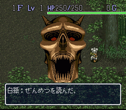
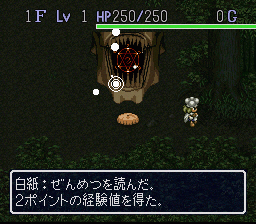
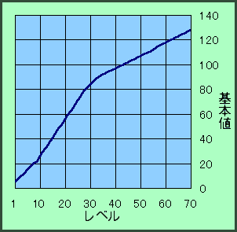

◆ 秘传心法 ◆
◆ 特殊装备入手法 ◆
特殊装备
入手条件
火迅�L魔刀
将カタナ＋99拿到煅冶屋打造
秘��カブラステギ
将����マンジカブラ＋99拿到煅冶屋打造
ラセン�L魔の盾
将�L魔の盾＋99拿到煅冶屋打造
こわれないつるはし
将镀金的つるはし拿到煅冶屋打造，下次再去取回时就能入手，名称依然是つるはし
（注：装备打造后所有合成能力会消失，最好用分裂之壶备份多1个以作合成之用。）
◆ 无限增殖法 ◆
相信很多风来人都已经会用了，必要道具：分裂之壶、吸出卷物X2、壶增大卷物（最好持有，以便将分裂之壶的容量增至10），将想要的道具和一个吸出卷物放入分裂之壶分裂，再用另一个吸出卷物吸出壶内道具，如此反复便可无限增殖。
【追记】
只要增加一个合成之壶便可达成无限合成！同样地，增加一个变化之壶便可无限变化！
◆ 无限落穴法 ◆
与无限增殖法相似，必要道具：分裂之壶、底拔之壶、吸出卷物X2、壶增大卷物。同样的操作，将吸出卷物和壶增大卷物分裂，对底拔之壶使用吸出卷物就可吸出落穴，壶容量减为0，再用壶增大卷物增加容量，如此反复便可达成无限落穴！这样每层都不用再战斗及寻找出口了，若遇上商店的话更是……呵呵，还用想吗？
◆ 地下水脉之村无限重返法 ◆
首先确保到达テ�`ブルマウンテン22F时拥有カラクロイドの肉，吃肉变身设置落穴机关，踩踏之后就会回到地下水脉之村，カラクロイドの肉在地下水脉之村的商店内可随机买到，此外也可利用ブフ�`の杖将22F出现的カラクロイド变成肉，此举可以增加在地下水脉之村买到（抢到）好道具的机会。
◆ 山顶之町无限骗钱法 ◆
首先要将剧情发展到山顶之町的壶店开店，身上要准备好“一�rしのぎの杖”和比较值钱的道具（越贵越好），之后对店主使用一�rしのぎの杖，店主会飞到村庄的出口处，不用管他，将身上值钱的道具放进预屋。好了，再去跟店主对话试试，店主询问是否将预屋的道具卖给他，收钱之后随便找间房子进入再出来，接着再跑去收钱，如此反复很快就变“大富翁”，此法对提高番付点数很有帮助。
◆ 道具的限制数及怪物的限制数 ◆
同一层中，所有道具最多只能有127个，若身上已持有127个道具，则不会再出现任何道具，下一层就算有商店，店内也是空无一物，这种情况通常发生在「菲的最终问题」迷宫使用无限增殖法疯狂复制道具的时候。不过在返回村庄时，若身上还是持有127个道具，则仓库内的道具全部消失，这点要特别注意！而怪物同时出现数最高20个，若有NPC在场，NPC也归到怪物数中。村庄中一般有10多个NPC，所以，在村庄内抢劫时，番犬和盗贼番出现数会大大减少，更利于抢劫的成功。
◆ 关于爆机后新迷宫的出现条件 ◆
挂轴里の洞窟：
若身上带着壶去见ガイバラ，他会把你的壶扔烂（好霸道！），下次再去见他时便能得到合成之壶了，回溪谷宿场遇见他的一个弟子，被告知ガイバラ为了寻找烧制壶的究极土进了挂轴洞窟再也没有出来，这时返回山顶之町就能进入挂轴洞窟。理论上这个迷宫是99F的，实际上却并不是这样……
食神のほこら：
1～5F有时会遇到厨师ナオキ，他给你一个ブフ―の杖，别到处乱用，赶快找到マムル将其变成肉交给厨师，吃过厨师特别烹制的红烧肉后，下次再遇见他时就能带他去山顶之町（此前必须先跟山顶之町右上角那间尚未开张的料理屋内的厨师对过话）。厨师想在町内开个料理店，但又不够钱。\￥-￥/没办法，好人做到底送他10000G吧，之后返回竹林之村就能进入食神之庙迷宫了。理论上这个迷宫是99F的，实际上也并不是这样……
フェイの最终问题:
完成以上2个迷宫后，再完成50个「菲的问题」就可进入「菲的最终问题」迷宫了，这个迷宫共99F。
◆ 关于2个隐藏卷物 ◆
众所周知，用白纸卷物可以写上其他卷物的名称并发挥该卷物的效果，除了正常出现的卷物外，还可以写上两个隐藏的卷物，分别是
圣域の卷物
和
全灭の卷物
。前一个无限制，只要写上
「せいいき」
放到地上就能发挥效果了，后一个必须要满足一定条件。条件是不使用仓库、预屋和仓库之壶（即是不在仓库及预屋存放任何道具，连进入也不行，包括不与飞脚对话及不让他托运道具）的状态下打爆机，达成「仓库なしでクリア」事件后，就可在白纸上写上
「ぜんめつ」
，发挥全灭の卷物的效果。


◆ 伤害值计算法则 ◆
伤害值＝攻击力÷2^（敌防御力÷10）±10%的误差
此计算法则对西林、NPC和怪物均有效。防御侧是亡灵武者时伤害值为1；所用武器对应怪物弱点时伤害值2倍。
◆ 西林的攻防计算法则 ◆
西林的攻击力＝基本值×（力量值＋武器强度＋8）÷16
西林的防御力＝盾强度
注：攻击力界限为255，基本值随LV的提升而随之改变，请参照下表。
LV
基本值
EXP
LV
基本值
EXP
1
5
0
36
92
90000
2
7
10
37
93
100000
3
9
30
38
94
115000
4
11
60
39
95
130000
5
13
100
40
96
145000
6
15
150
41
97
160000
7
17
230
42
98
175000
8
19
350
43
99
200000
9
21
500
44
100
230000
10
23
700
45
101
260000
11
26
950
46
102
290000
12
29
1200
47
103
320000
13
32
1500
48
104
350000
14
35
1800
49
105
380000
15
38
2300
50
106
410000
16
41
2800
51
107
440000
17
44
3500
52
108
470000
18
47
4200
53
109
500000
19
50
5000
54
110
530000
20
53
6000
55
111
560000
21
56
7000
56
112
590000
22
59
8000
57
113
620000
23
62
10000
58
115
650000
24
65
13000
59
116
680000
25
68
16000
60
117
710000
26
71
20000
61
118
740000
27
74
25000
62
119
770000
28
77
30000
63
120
800000
29
80
36000
64
121
830000
30
82
42000
65
122
860000
31
84
48000
66
123
890000
32
86
54000
67
124
920000
33
88
60000
68
125
950000
34
90
70000
69
126
980000
35
91
80000
70
127
999999

▲LV与基本值对应关系的直角坐标分布图